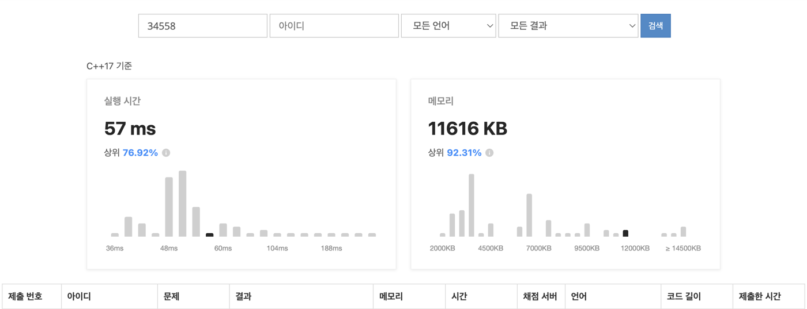

BOJ Performance
백준 채점 현황에서 내 코드의 실행 시간과 메모리가
다른 정답 제출 사이 어디쯤인지 그래프로 보여줍니다.
어디서 보이나요
로그인한 상태로 내가 맞은 문제의 채점 현황(acmicpc.net/status?problem_id=…)을 열면 결과 표 위에 카드 두 개가 생깁니다.

- 실행 시간과 메모리 카드에 내 최고 기록, 상위 비율, 최근 정답 제출 최대 200건의 분포를 보여줍니다.
- 언어 필터를 고르지 않으면 내가 가장 최근에 맞은 언어로 비교하고, 다른 언어로도 맞았다면 카드 위 링크로 바꿀 수 있습니다.
- BOJ 말고 다른 서버로는 아무것도 보내지 않습니다.
업데이트 소식
불러오는 중…